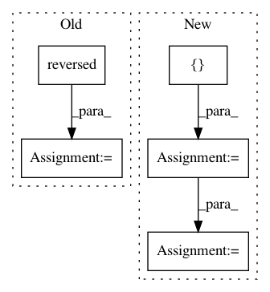

c71244ca37022167536cd9bd6c6f8104da92cf52,lib/matplotlib/_cm_listed.py,,,#,3
Before Change
cmaps[name] = ListedColormap(data, name=name)
// generate reversed colormap
name = name + "_r"
cmaps[name] = ListedColormap(list(reversed(data)), name=name)
After Change
_twilight_data[:len(_twilight_data)//2])
_twilight_shifted_data.reverse()
cmaps = {
name: ListedColormap(data, name=name) for name, data in [
("magma", _magma_data),
("inferno", _inferno_data),
("plasma", _plasma_data),
("viridis", _viridis_data),
("cividis", _cividis_data),
("twilight", _twilight_data),
("twilight_shifted", _twilight_shifted_data),
]}
In pattern: SUPERPATTERN
Frequency: 3
Non-data size: 5
Instances
Project Name: matplotlib/matplotlib
Commit Name: c71244ca37022167536cd9bd6c6f8104da92cf52
Time: 2019-09-30
Author: anntzer.lee@gmail.com
File Name: lib/matplotlib/_cm_listed.py
Class Name:
Method Name:
Project Name: bokeh/bokeh
Commit Name: 849729af279adeb657bd3d864df84aa038b79c3d
Time: 2015-12-22
Author: bryanv@continuum.io
File Name: examples/plotting/file/periodic.py
Class Name:
Method Name:
Project Name: tensorflow/datasets
Commit Name: 7b270c7526d74355fcf27496ac8ee5878aaa1683
Time: 2018-12-11
Author: rsepassi@google.com
File Name: tensorflow_datasets/scripts/document_datasets.py
Class Name:
Method Name: make_statistics_information